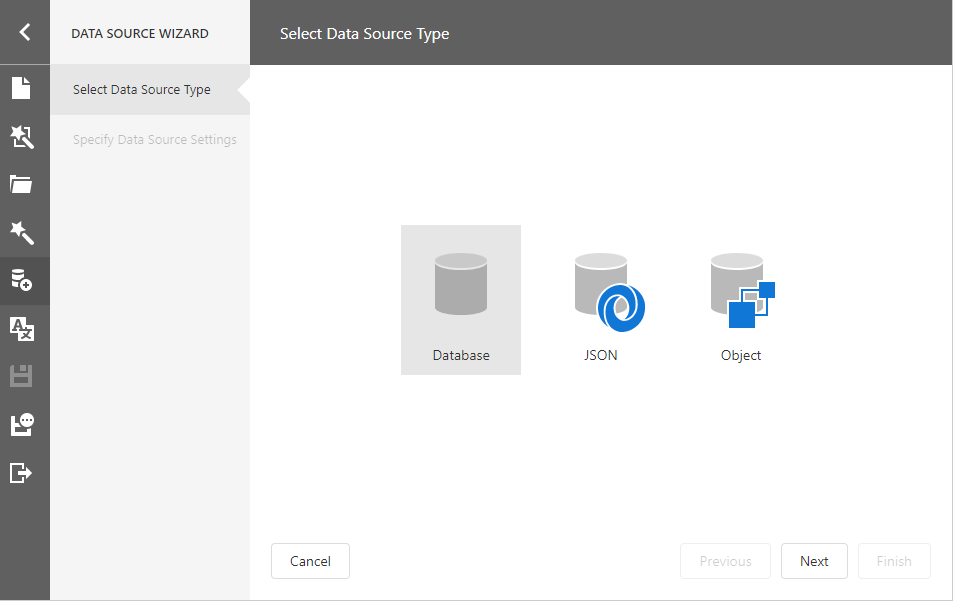
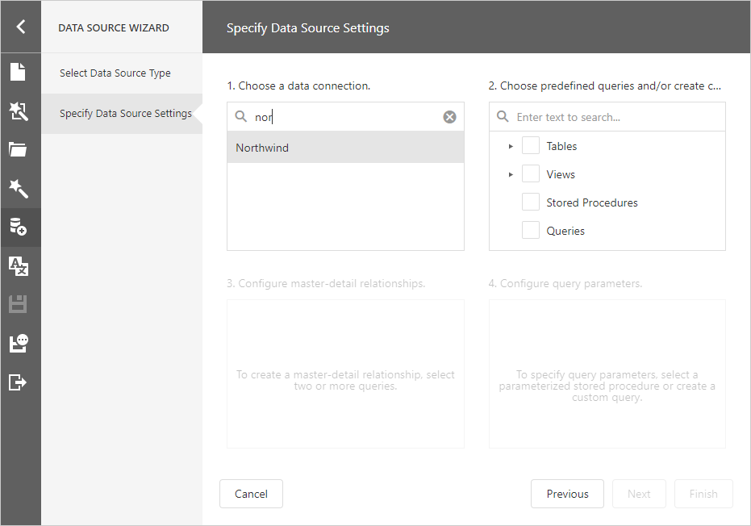

Bind a Report to a Database
This tutorial illustrates how to bind a report to a database and specify a master-detail relationship between data source queries.
Add a New Data Source
Invoke the designer menu and click Add Data Source.

The menu contains this command if your software vendor has registered data connections in the application.
Select Database in the invoked Data Source Wizard and click Next. Available database types depend on the data connections registered in the application for the Data Source Wizard.

Select the data connection and click Next.

Choose which tables, views and/or stored procedures to add to a report and click Next. Select two or more tables to create a master-detail report.
Note
You can also create custom queries to shape data at the data source level. Select Queries and click the plus button to add a new query.
The invoked Query Builder allows you to join multiple tables, filter, sort, and group their data, and calculate various aggregate functions.
Set master-detail relationships on this wizard page. Hover the master table name, click the plus button and choose the detail table.

Select the required key fields (columns) to connect tables.

Click Finish to close the Data Source Wizard.
Use an Existing Data Source
You can bind your report to a predefined data source. Open the Field List panel, click the Add DataSource button and select a data source from the drop-down list.
The Field List reflects the added SQL data source and its hierarchy. You can select the data source to edit it.